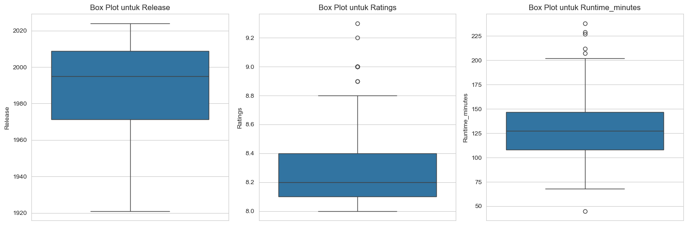

!pip install sqlalchemy psycopg2-binary
Requirement already satisfied: sqlalchemy in c:\users\user\anaconda3\lib\site-packages (2.0.39)
Requirement already satisfied: psycopg2-binary in c:\users\user\anaconda3\lib\site-packages (2.9.10)
Requirement already satisfied: greenlet!=0.4.17 in c:\users\user\anaconda3\lib\site-packages (from sqlalchemy) (3.1.1)
Requirement already satisfied: typing-extensions>=4.6.0 in c:\users\user\anaconda3\lib\site-packages (from sqlalchemy) (4.12.2)
tugas2#
Penjelasan Kode#
1. Import Library#
import pandas as pd
import numpy as np
import matplotlib.pyplot as plt
import seaborn as sns
# Mengimpor library yang diperlukan
import pandas as pd
import numpy as np
import matplotlib.pyplot as plt
import seaborn as sns
# Mengatur gaya visualisasi agar lebih menarik
sns.set_style('whitegrid')
Memuat Data#
import pandas as pd
from sqlalchemy import create_engine
# --- GANTI INFORMASI DI BAWAH INI ---
db_user = 'postgres'
db_password = '123456789'
db_host = 'localhost'
db_port = '5432'
db_name = 'data_saya'
# TODO: GANTI DENGAN NAMA TABEL YANG BENAR DARI PGADMIN
# Kemungkinan besar, ini hanya perlu diubah menjadi huruf kecil: 'data_saya'
table_name = 'data_saya'
# ------------------------------------
# Membuat string koneksi (connection string)
db_url = f'postgresql://{db_user}:{db_password}@{db_host}:{db_port}/{db_name}'
# Membuat engine koneksi ke database
engine = None
try:
engine = create_engine(db_url)
# Query SQL untuk mengambil semua data dari tabel
sql_query = f'SELECT * FROM "{table_name}";' # Menggunakan kutip dua untuk keamanan
# Membaca data dari PostgreSQL ke dalam DataFrame pandas
df = pd.read_sql(sql_query, engine)
print("✅ Berhasil terhubung dan mengambil data dari PostgreSQL.")
print("\n5 Baris Data Teratas:")
display(df.head())
except Exception as e:
print(f"❌ Gagal mengambil data: {e}")
finally:
if engine is not None:
engine.dispose() # Menutup koneksi
✅ Berhasil terhubung dan mengambil data dari PostgreSQL.
5 Baris Data Teratas:
| Rank | Title | Release | Runtime | Rated | Ratings | |
|---|---|---|---|---|---|---|
| 0 | 1 | The Shawshank Redemption | 1994 | 2h 22m | R | 9.3 |
| 1 | 2 | The Godfather | 1972 | 2h 55m | R | 9.2 |
| 2 | 3 | The Dark Knight | 2008 | 2h 32m | PG-13 | 9.0 |
| 3 | 4 | The Godfather Part II | 1974 | 3h 22m | R | 9.0 |
| 4 | 5 | 12 Angry Men | 1957 | 1h 36m | Approved | 9.0 |
Informasi Dasar dan Tipe Data#
# Mendapatkan ringkasan informasi dataset
print("Informasi Dataset:")
df.info()
Informasi Dataset:
<class 'pandas.core.frame.DataFrame'>
RangeIndex: 250 entries, 0 to 249
Data columns (total 6 columns):
# Column Non-Null Count Dtype
--- ------ -------------- -----
0 Rank 250 non-null int64
1 Title 250 non-null object
2 Release 250 non-null int64
3 Runtime 250 non-null object
4 Rated 250 non-null object
5 Ratings 250 non-null float64
dtypes: float64(1), int64(2), object(3)
memory usage: 11.8+ KB
Analisis Kualitas Data (Missing Values)#
# Menghitung jumlah missing values di setiap kolom
missing_values = df.isnull().sum()
# Menghitung persentase missing values
percentage_missing = (missing_values / len(df)) * 100
# Membuat DataFrame untuk menampilkan hasilnya
missing_info = pd.DataFrame({'Jumlah Missing': missing_values, 'Persentase (%)': percentage_missing})
# Menampilkan kolom yang memiliki missing values saja
print("Analisis Missing Values:")
missing_info[missing_info['Jumlah Missing'] > 0].sort_values(by='Jumlah Missing', ascending=False)
Analisis Missing Values:
| Jumlah Missing | Persentase (%) |
|---|
Pra-pemrosesan Data (Data Cleaning)#
# Fungsi untuk mengonversi format runtime ke total menit
def convert_runtime_to_minutes(runtime_str):
if isinstance(runtime_str, str):
hours = 0
minutes = 0
if 'h' in runtime_str:
hours = int(runtime_str.split('h')[0])
if 'm' in runtime_str:
minutes_part = runtime_str.split('m')[0]
if 'h' in minutes_part:
minutes = int(minutes_part.split('h')[1].strip())
else:
minutes = int(minutes_part)
return hours * 60 + minutes
return None # Mengembalikan None jika bukan string
# Membuat kolom baru 'Runtime_minutes' dengan format numerik
df['Runtime_minutes'] = df['Runtime'].apply(convert_runtime_to_minutes)
# Menampilkan hasil konversi
print("Data setelah konversi kolom 'Runtime':")
df[['Title', 'Runtime', 'Runtime_minutes']].head()
Data setelah konversi kolom 'Runtime':
| Title | Runtime | Runtime_minutes | |
|---|---|---|---|
| 0 | The Shawshank Redemption | 2h 22m | 142 |
| 1 | The Godfather | 2h 55m | 175 |
| 2 | The Dark Knight | 2h 32m | 152 |
| 3 | The Godfather Part II | 3h 22m | 202 |
| 4 | 12 Angry Men | 1h 36m | 96 |
Statistik Deskriptif#
# Menampilkan statistik deskriptif untuk kolom numerik
# 'Rank' mungkin tidak relevan untuk dianalisis distribusinya, jadi bisa kita drop
print("Statistik Deskriptif untuk Kolom Numerik:")
df.describe()
Statistik Deskriptif untuk Kolom Numerik:
| Rank | Release | Ratings | Runtime_minutes | |
|---|---|---|---|---|
| count | 250.000000 | 250.00000 | 250.000000 | 250.000000 |
| mean | 125.500000 | 1988.17200 | 8.310000 | 129.796000 |
| std | 72.312977 | 25.59631 | 0.232716 | 29.942555 |
| min | 1.000000 | 1921.00000 | 8.000000 | 45.000000 |
| 25% | 63.250000 | 1971.25000 | 8.100000 | 108.250000 |
| 50% | 125.500000 | 1995.00000 | 8.200000 | 127.500000 |
| 75% | 187.750000 | 2008.75000 | 8.400000 | 146.750000 |
| max | 250.000000 | 2024.00000 | 9.300000 | 238.000000 |
Analisis Outlier dengan Metode IQR#
# Kolom numerik yang akan dianalisis untuk outlier
numerical_cols = ['Release', 'Ratings', 'Runtime_minutes']
print("Analisis Outlier dengan Metode IQR:")
for col in numerical_cols:
Q1 = df[col].quantile(0.25)
Q3 = df[col].quantile(0.75)
IQR = Q3 - Q1
lower_bound = Q1 - 1.5 * IQR
upper_bound = Q3 + 1.5 * IQR
# Mencari outlier
outliers = df[(df[col] < lower_bound) | (df[col] > upper_bound)]
print(f"\n--- Analisis Kolom: {col} ---")
print(f"Batas Bawah: {lower_bound:.2f}")
print(f"Batas Atas: {upper_bound:.2f}")
print(f"Jumlah Outlier Terdeteksi: {len(outliers)}")
if not outliers.empty:
print("Contoh Outlier:")
print(outliers[['Title', col]].head())
Analisis Outlier dengan Metode IQR:
--- Analisis Kolom: Release ---
Batas Bawah: 1915.00
Batas Atas: 2065.00
Jumlah Outlier Terdeteksi: 0
--- Analisis Kolom: Ratings ---
Batas Bawah: 7.65
Batas Atas: 8.85
Jumlah Outlier Terdeteksi: 9
Contoh Outlier:
Title Ratings
0 The Shawshank Redemption 9.3
1 The Godfather 9.2
2 The Dark Knight 9.0
3 The Godfather Part II 9.0
4 12 Angry Men 9.0
--- Analisis Kolom: Runtime_minutes ---
Batas Bawah: 50.50
Batas Atas: 204.50
Jumlah Outlier Terdeteksi: 6
Contoh Outlier:
Title Runtime_minutes
21 Seven Samurai 207
86 Once Upon a Time in America 229
99 Lawrence of Arabia 227
162 Gone with the Wind 238
182 Ben-Hur 212
Visualisasi Outlier dengan Box Plot#
# Membuat Box Plot untuk setiap kolom numerik untuk melihat outlier
plt.figure(figsize=(15, 5))
for i, col in enumerate(numerical_cols, 1):
plt.subplot(1, 3, i)
sns.boxplot(y=df[col])
plt.title(f'Box Plot untuk {col}')
plt.ylabel(col)
plt.tight_layout()
plt.show()

Analisis Konsistensi Data (Kolom Kategorikal)#
# Memeriksa konsistensi dan distribusi data pada kolom 'Rated'
print("Distribusi Kategori pada Kolom 'Rated':")
rated_counts = df['Rated'].value_counts()
print(rated_counts)
# Visualisasi distribusi kolom 'Rated'
plt.figure(figsize=(10, 6))
sns.countplot(y=df['Rated'], order=rated_counts.index, palette='viridis')
plt.title('Jumlah Film Berdasarkan Rating (Rated)')
plt.xlabel('Jumlah Film')
plt.ylabel('Rating')
plt.show()
Distribusi Kategori pada Kolom 'Rated':
Rated
R 101
PG 39
PG-13 35
Not Rated 29
Approved 22
G 18
Passed 5
NC-17 1
Name: count, dtype: int64
C:\Users\user\AppData\Local\Temp\ipykernel_17076\368845606.py:8: FutureWarning:
Passing `palette` without assigning `hue` is deprecated and will be removed in v0.14.0. Assign the `y` variable to `hue` and set `legend=False` for the same effect.
sns.countplot(y=df['Rated'], order=rated_counts.index, palette='viridis')